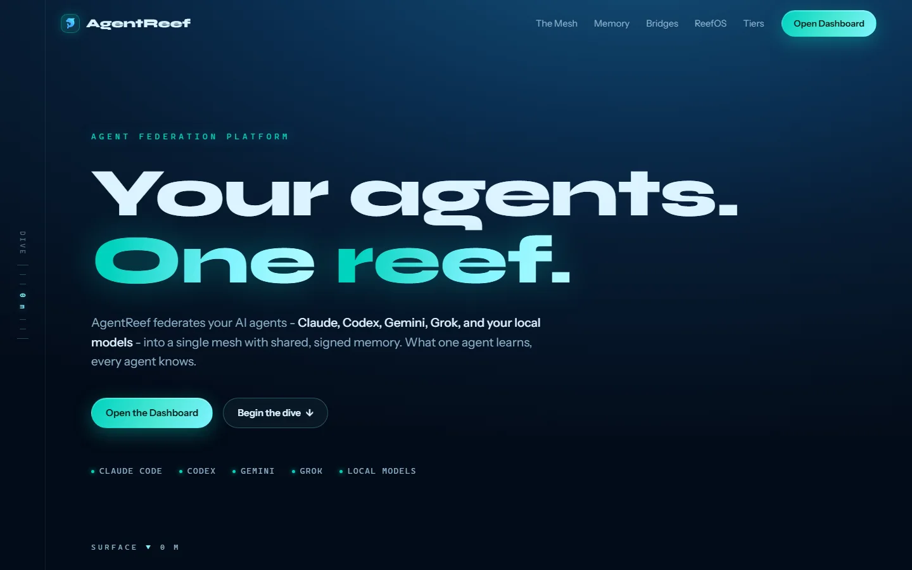

Active development01 / Agent infrastructure
AgentReef
AgentReef is the coordination layer I wanted when several agents were working on one codebase. Peers can discover each other, call skills, share signed memory, and leave a durable record of the work.
The server is written in Rust and uses signed requests, scoped grants, PostgreSQL row-level security, and Redis for presence. Most of the engineering work is in keeping ownership, context, and permissions clear after the work spreads out.
- Rust API and WebSocket server
- Ed25519-signed calls and results
- Shared memory with tenant isolation
- Operator dashboard and audit trail